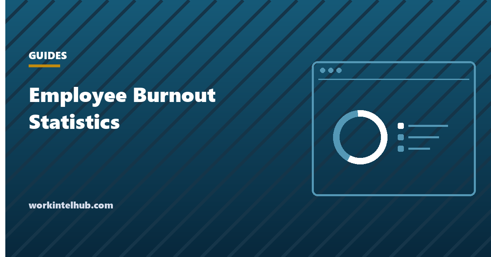

Employee Burnout Statistics in 2026 and What They Mean for Managers

Employee burnout statistics are population-level survey figures describing how common burnout-related outcomes are across a workforce, and they are useful to managers for exactly one purpose: deciding whether the conditions you set are survivable. They cannot tell you anything about a specific person. We will repeat that, because it is the mistake this whole subject invites. Statistics describe populations, not individuals, and nothing on this page diagnoses anyone.
Start with what burnout officially is. The World Health Organization defines burn-out in ICD-11, dated May 28, 2019, as a syndrome conceptualized as resulting from chronic workplace stress that has not been successfully managed. It has three dimensions: feelings of energy depletion or exhaustion; increased mental distance from one's job, or feelings of negativism or cynicism related to it; and reduced professional efficacy.
Two clarifications from the same source do real work. The WHO classifies burn-out as an occupational phenomenon and states it is not classified as a medical condition, placing it in the chapter on factors influencing health status or contact with health services. And it applies to the occupational context only, not to experiences in other areas of life. Notice where the cause sits in that definition. Chronic workplace stress that went unmanaged is a fact about the work, which is why the numbers below are a report card on conditions rather than on people.
What burnout is, and what it is not
Burnout is a workplace condition, not a personal weakness and not a clinical label a manager gets to apply. The WHO definition is precise about the mechanism: stress that is chronic, meaning it persists, and unmanaged, meaning nothing about the work changed in response. Both halves are things you can see and both are things you can fix.
Map the three dimensions against what a manager can observe and the honest answer is: none of them directly. Energy depletion is invisible. So are mental distance and cynicism, and inferring them from message tone or response times produces something no team should work under. What you can observe is the upstream condition, workload that never comes back down. Our companion piece on the signs of employee burnout hiding in your workload data covers the observable patterns in detail.
Because burnout is a health matter, the manager's job stops at workload and conditions. When a pattern worries you, the response is a conversation plus a workload change. It is never a performance process, a rating, or a note in a file.
Employee burnout statistics for the US workforce
Two thirds of employed Americans report at least one burnout-associated outcome in a given month. The figure comes from the American Psychological Association 2024 Work in America Survey, conducted by The Harris Poll among 2,027 employed US adults, fielded March 25 to April 3, 2024, with a margin of error of plus or minus 3.1 percentage points. We will state that method every time we use these numbers, because a figure without a sample is not a figure.
67% experienced at least one outcome associated with burnout in the last month, including lack of interest, low motivation or energy, feeling lonely or isolated, or reduced effort at work. That is a broad measure, and reading it as two thirds of workers being burned out overstates what was asked. Read it instead as a measure of how widespread the early signals are, which makes it a poor screening tool and a good argument for changing conditions.
| Figure | What it measures | Source, sample and date |
|---|---|---|
| 67% | Experienced at least one outcome associated with burnout in the last month | APA 2024 Work in America Survey, Harris Poll, 2,027 employed US adults, March 25 to April 3, 2024, plus or minus 3.1 points |
| 43% | Feel tense or stressed out during the workday | APA 2024 Work in America Survey, same sample and dates |
| 61% | Feel tense or stressed, among workers reporting lower psychological safety | APA 2024 Work in America Survey, same sample and dates |
| 45% | Work more hours per week than they want to | APA 2024 Work in America Survey, same sample and dates |
| 43% | Experience lower psychological safety at work | APA 2024 Work in America Survey, same sample and dates |
| 30% vs 3% | Describe the workplace as toxic, lower versus higher psychological safety (about 10 times more likely) | APA 2024 Work in America Survey, same sample and dates |
| 39% | Worry that disclosing a mental health condition would harm their standing at work | APA 2024 Work in America Survey, same sample and dates |
| 29% | Still checking the inbox by 10 pm | Microsoft Work Trend Index, June 2025, telemetry plus survey of 31,000 knowledge workers across 31 markets |
Psychological safety is the sharpest split in the data
The same APA survey shows that how safe people feel changes almost everything else. 43% of the 2,027 employed US adults surveyed experience lower psychological safety at work. Among that group, 61% report feeling tense or stressed during the workday, against 43% across the whole sample. And workers with lower psychological safety were about 10 times more likely to describe their workplace as toxic, 30% versus 3%.
A tenfold gap is unusual in survey work, and it points somewhere specific. Two teams can carry identical workloads and produce very different experiences depending on whether people can say a deadline is not achievable without it counting against them. That is not a wellness program variable. It is set by how a manager reacts the first time someone pushes back, and everyone watches that moment.
This is also the most actionable finding in the set, because it costs nothing and needs no budget approval. Make it normal to raise a scope problem early, respond to the first person who does by changing something visible, and stop treating an honest capacity estimate as a negotiating position. Getting that estimate into a form leadership will act on is its own skill, covered in our guide to reporting team capacity to leadership.
The 45% who work more hours than they want
Nearly half of employed Americans say they work more hours per week than they want to: 45% in the APA 2024 Work in America Survey of 2,027 employed US adults fielded March 25 to April 3, 2024. Of every figure here, this is the one most directly inside a manager's control.
Hours are not a personality trait. They are the output of workload, staffing, and deadlines, all of which somebody decided and somebody can undo. When a team consistently works past what people want, the usual causes are a headcount gap nobody backfilled, a scope that grew without a date moving, or a coverage model that assumes nobody is ever unavailable. All three are structural, and none improve because a person got better at time management.
Gallup adds an uncomfortable note about who is carrying this. In its State of the Global Workplace report published April 7, 2026, Gallup reported that global employee engagement declined for the second year in a row in 2025, reaching its lowest level since 2020, and that the decline was most acute among managers. Gallup put the cost of low engagement at roughly $10 trillion in lost productivity, or 9% of global GDP. The people usually asked to fix everyone else's workload are the group whose own engagement fell fastest.
These figures describe populations, never individuals
Nothing in this article, and nothing in any survey, diagnoses a person. Burnout is a health matter, and assessing anyone's health is not a manager's role at any point. The legitimate use of these statistics is to argue for changing workload and working conditions. When you are concerned about one person, the response is a conversation and a real workload change within the week, never a performance review, a rating, a performance improvement plan, or a disciplinary file. Route it into a performance process and you teach the whole team to hide the problem.
Why the numbers you collect internally look better than reality
Employees have a rational reason to understate this, and the APA measured it. 39% worry that disclosing a mental health condition would harm their standing at work, and 59% believe employers overestimate how healthy the workplace is. Both figures come from the same survey of 2,027 employed US adults fielded in spring 2024.
Put those together and your internal pulse survey has a known bias in a known direction. When four in ten people believe disclosure carries a professional cost, a form promising anonymity is competing against a lived assessment of risk, and the risk assessment usually wins. A clean engagement score is compatible with a team in real difficulty.
The practical adjustment is to stop treating self-report as the primary instrument and start reading conditions you can see: hours, meeting load, recovery gaps, PTO that never gets taken. Conditions do not require anyone to admit anything. They also sit inside the broader measurement question we work through in the complete guide to employee productivity, which deals with what workplace data can and cannot support.
The conditions behind the percentages
Chronic workplace stress has a texture, and telemetry captures part of it. Microsoft's Work Trend Index, published June 17, 2025 and combining anonymized Microsoft 365 telemetry with a survey of 31,000 knowledge workers across 31 markets fielded February 6 to March 24, 2025, found workers are interrupted roughly every two minutes during work hours, about 275 times a day.
The same research found 48% of employees and 52% of leaders say work feels chaotic and fragmented, that one in three say the pace makes it impossible to keep up, that 29% are still checking the inbox by 10 pm, and that meetings after 8 pm rose 16% year over year. Match that against the WHO's two conditions. Fragmentation at that level is chronic, and if nothing in the working setup changes in response, it is unmanaged. That is the definition, arrived at from the other direction.
Fixing it is structural rather than personal. Cutting recurring meetings, giving work a stopping point, and defending uninterrupted time are all decisions a manager makes, which is why the tactics in our guide to setting focus blocks that survive a busy calendar belong in a conversation about burnout rather than a conversation about discipline.
What to do with employee burnout statistics
Use employee burnout statistics to change conditions, never to screen people. The distinction is not a formality. Population figures used as a screen produce false accusations and teach people to manage their appearance rather than their workload, and you lose the signal while keeping the risk.
A defensible sequence looks like this. Audit actual hours against what people say they want to work, since 45% is the national gap and yours may be wider. Count recurring meetings and delete the ones nobody would recreate. Check whether recovery time exists at all. Ask whether people feel able to say a deadline is not achievable, then act on the first answer you get. Where the load is structural, escalate it rather than redistributing it. The same work pays twice, since our employee retention strategies run on these levers as well: hours, workload, and whether a manager can say no on the team's behalf.
When one person's pattern concerns you, keep the response narrow: describe what you noticed, ask an open question, and change something specific inside the week. Say out loud that it is not a performance conversation and that nothing in it enters a review. If you cannot honestly promise that, do not open the conversation. And if the answer is that everything is fine, accept it and fix the workload anyway when the load is genuinely unsustainable. Nobody owes an employer a disclosure about their health.
Where these figures stop being useful
Every number here describes a national sample at a point in time, and your team is neither. The APA figures come from 2,027 employed US adults surveyed over ten days in spring 2024, with a margin of error of plus or minus 3.1 percentage points. That is a solid instrument for describing a country and a weak one for predicting a team of nine in a specific industry with a specific manager.
The measures also differ from each other more than the roundups admit. The APA question about burnout outcomes is broad, covering low motivation and feeling isolated, which is not the three-dimension WHO syndrome. Gallup's engagement measure is a different construct again. Comparing them as though they track one quantity produces confident conclusions the data does not support, which is part of why single-number summaries of knowledge work mislead, as we argue in why productivity metrics fail knowledge teams.
One last limit, and it is the one we would keep above all others. Statistics describe populations, not individuals, and no percentage on this page tells you anything about the person across from you. Burnout is a health matter; the manager's job is workload and conditions; the response is a conversation and a workload change, never a performance process. If your organization has already decided it cannot reduce anyone's workload, reading employee burnout statistics will not help. It will only convert a bad outcome into one you saw coming.
Key takeaways
- The WHO classifies burn-out as an occupational phenomenon caused by unmanaged chronic workplace stress, and explicitly not as a medical condition.
- The APA 2024 Work in America Survey of 2,027 employed US adults found 67% had at least one burnout-associated outcome in the past month and 43% feel tense or stressed during the workday.
- Psychological safety is the sharpest divide: 43% report lower psychological safety, 61% of them feel tense or stressed, and they are about 10 times more likely to call their workplace toxic, 30% versus 3%.
- 45% work more hours than they want, which is a staffing and scope decision rather than a personal habit.
- 39% fear that disclosing a mental health condition would damage their standing, so internal survey results run optimistic by design.
- Statistics describe populations, not individuals. Nothing here diagnoses anyone, and the response to a concern is always a conversation plus a workload change, never a performance process.
Frequently asked questions
What is the official definition of burnout?
The World Health Organization defines burn-out in ICD-11 as a syndrome conceptualized as resulting from chronic workplace stress that has not been successfully managed, with three dimensions: feelings of energy depletion or exhaustion, increased mental distance from one's job or feelings of negativism or cynicism related to it, and reduced professional efficacy. The WHO classifies it as an occupational phenomenon and states it is not classified as a medical condition. It applies to the occupational context only and should not describe experiences in other areas of life.
What percentage of US workers report burnout symptoms?
67 percent experienced at least one outcome associated with burnout in the previous month, according to the American Psychological Association 2024 Work in America Survey, conducted by The Harris Poll among 2,027 employed US adults from March 25 to April 3, 2024, with a margin of error of plus or minus 3.1 percentage points. The listed outcomes included lack of interest, low motivation or energy, feeling lonely or isolated, and reduced effort at work. That is a population figure. It says nothing about any individual on your team.
How many workers feel tense or stressed during the workday?
43 percent, in the APA 2024 Work in America Survey of 2,027 employed US adults fielded March 25 to April 3, 2024. Among workers reporting lower psychological safety at work, the figure rises to 61 percent. The gap is the useful part: the same stressor lands very differently depending on whether people feel safe raising problems.
What does psychological safety have to do with burnout?
It is the strongest split in the APA 2024 data. 43 percent of the 2,027 employed US adults surveyed experience lower psychological safety at work. Those workers are about 10 times more likely to describe their workplace as toxic, 30 percent versus 3 percent, and 61 percent of them report feeling tense or stressed during the workday against 43 percent overall. Psychological safety is something a manager can change directly, which makes it the most actionable finding in the set.
How many people work more hours than they want to?
45 percent, according to the APA 2024 Work in America Survey of 2,027 employed US adults. This is the most directly fixable figure in the whole set, because hours are set by workload, staffing, and deadlines, all of which are management decisions rather than personal habits.
Can burnout statistics tell me if someone on my team is burned out?
No. Statistics describe populations, not individuals, and nothing on this page or in any survey diagnoses anyone. Burnout is a health matter. A manager's job is the workload and the conditions, not an assessment of a person. If a pattern concerns you, the response is a conversation and a workload change, never a performance process.
Why do employees hide burnout from managers?
Because disclosure feels risky. The APA 2024 Work in America Survey found 39 percent of employed US adults worry that disclosing a mental health condition would harm their standing at work, and 59 percent believe employers overestimate how healthy the workplace is. If you have ever wondered why survey results look fine while people quietly leave, those two figures are a large part of the answer.
What does Gallup say about engagement and burnout?
In its State of the Global Workplace report published April 7, 2026, Gallup reported that global employee engagement declined for the second year in a row in 2025, reaching its lowest level since 2020, and that the decline was most acute among managers. Gallup put the cost of low engagement at about 10 trillion dollars in lost productivity, or 9 percent of global GDP. The manager finding matters because managers are usually the people asked to fix everyone else's workload.
What workplace conditions show up in the data as burnout risk?
Fragmentation and after-hours creep. Microsoft's Work Trend Index published in June 2025, combining anonymized Microsoft 365 telemetry with a survey of 31,000 knowledge workers across 31 markets, found interruptions roughly every two minutes during work hours, about 275 a day, 48 percent of employees and 52 percent of leaders describing work as chaotic and fragmented, 29 percent still checking the inbox by 10 pm, and meetings after 8 pm up 16 percent year over year. Those are conditions a manager can change.
What should a manager actually do with these numbers?
Use them to justify changing conditions, not to screen people. Audit hours against what people want to work, cut meeting load and protect recovery time, make it safe to say a deadline is not achievable, and escalate structural overload rather than distributing it. When a specific person's workload looks unsustainable, have a conversation and change the workload. Never route it into a review, a rating, or a disciplinary process.